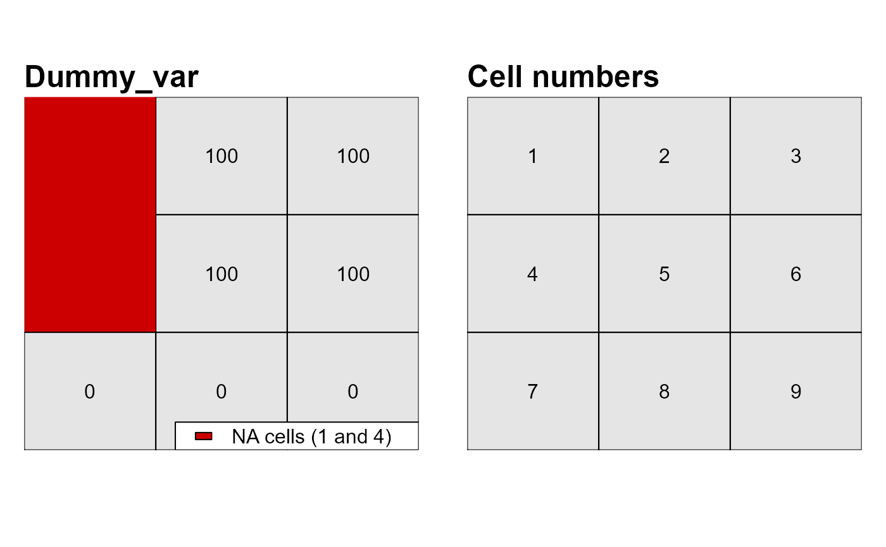

Converts a single or a multi-layer raster into an attribute table
(data.frame).
attTbl(r, var_names = NULL)single or multi-layer raster of the class SpatRaster (see
help("rast", terra)).
character vector, raster layers' names in the attribute
table. If NULL, then the original layers' names are used.
data.frame
Attribute tables come with a column named "Cell" which
stores raster cell numbers and associate each row of the attribute table
with a cell of the raster object. The remaining columns of the attribute
table store the data contained in the raster layers. Note that only raster
cells having no missing value in no layer (complete cases) are included
in the attribute table.
Attribute table contains only complete cases, i.e., raster cells having a value for every layer of the stack.
library(scapesClassification)
library(terra)
## CREATE A DUMMY RASTER ##
r <- terra::rast(matrix(c(NA,100,100,NA,100,100,0,0,0),
nrow = 3,
ncol = 3,
byrow = TRUE))
## RASTER CELL NUMBERS ##
rcn <- r; rcn[] <- 1:9
## PLOT DATA AND CELL NUMBERS ##
par(mfrow=c(1,2))
m <- c(4, 1, 4, 1)
plot(r, col="grey90", colNA="red3", mar=m, asp = NA, axes=FALSE, legend=FALSE)
text(r)
lines(r)
mtext(side=3, line=0.2, adj=0, cex=1.5, font=2, "Dummy_var")
legend("bottomright", ncol=1, bg="white", fill=c("red3"),
legend = c("NA cells (1 and 4)"))
plot(rcn, col="grey90", mar=m, asp=NA, axes=FALSE, legend=FALSE)
text(rcn)
lines(rcn)
mtext(side=3, line=0.2, adj=0, cex=1.5, font=2, "Cell numbers")

## VISUALIZE ATTRIBUTE TABLE ##
at <- attTbl(r, var_names = c("dummy_var"))
at
#> Cell dummy_var
#> 1 2 100
#> 2 3 100
#> 3 5 100
#> 4 6 100
#> 5 7 0
#> 6 8 0
#> 7 9 0
# Note that cells 1 and 4 have missing values and therefore are not included in the table
any(at$Cell %in% c(1,4))
#> [1] FALSE